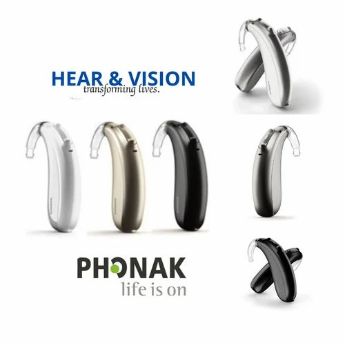
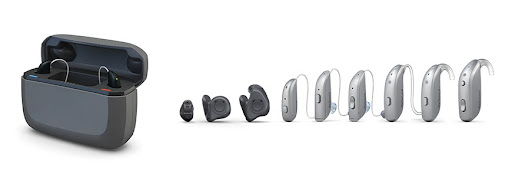
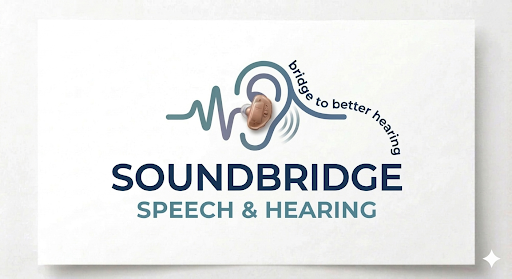

Expert Hearing & Speech Care Bridge to Better Hearing
Discover professional hearing assessments, digital hearing aid solutions and personalized speech therapy support.
WHERE BETTER HEARING BEGINS
SoundBridge Speech and Hearing Clinic is Bengaluru's premier hearing clinic and audiology services, providing the latest in hearing aid technology and personalized care.
We offer a wide range of hearing aids from top manufacturers with the most advanced features and technologies. Our dedication to personalized care ensures that you find the hearing aid that fits your lifestyle and budget. Our team of highly trained Audiologists provides comprehensive patient care.
THE BRIDGE BETWEEN SOUND AND CONNECTION
SoundBridge was founded on one clear premise: hearing is not just an auditory mechanism, it is the bridge to human understanding, emotional intimacy, and rich connection with life.

Comprehensive Audiology
From pediatric hearing tests to adult diagnostic audiometry, our qualified audiologists provide thorough clinical evaluations using precision instruments.
Early Hearing Assessment
Early detection prevents auditory deprivation, reduces cognitive strain, and ensures children and adults maintain clear speech and connection.
Top Global Manufacturers
We partner with the world's leading hearing aid manufacturers to deliver state-of-the-art digital signal processing and discreet designs.
Lifestyle Matching
We take the time to understand your specific communication environments, ensuring you find the solution that fits your lifestyle and budget.
Trial & Precision Fitting
Experience hearing aids in real acoustic settings with real-ear verification and tailored canal programming before making any final decision.
Speech & Language Care
Dedicated speech language evaluations and structured therapy sessions designed to restore clear articulation, fluency, and cognitive expression.
Patient-Focused Consultation
Unhurried, compassionate clinical appointments focused on listening to your personal challenges, family concerns, and daily acoustic needs.
Lifetime After-Sales Support
Continuous sound adjustments, ultrasonic cleaning, firmware updates, battery replacement, and repair services for your hearing instruments.
COMMON HEARING PROBLEMS & SYMPTOMS
Recognizing early indicators of auditory and communication challenges helps safeguard cognitive vitality, relationships, and daily well-being.
General Hearing Loss
A gradual or sudden reduction in the ability to perceive sounds clearly across frequency ranges.
Turning TV volume abnormally high, frequently asking people to repeat themselves, muffled speech.
When family members notice speech difficulty or listening requires exhausting mental effort.
Age-Related Hearing Loss
Natural sensorineural wear of delicate inner-ear hair cells (Presbycusis) usually starting after age 55.
High-pitched sounds (children/women's voices, birdsong, consonants like s, f, th) become unclear.
Prescribing modern discreet hearing aids with targeted high-frequency speech enhancement algorithms.
Noise-Induced Hearing Loss
Damage caused by prolonged exposure to loud industrial sounds, traffic, machinery, or loud personal earphones.
Temporary or permanent dullness in hearing, ear fullness, or ringing sounds after loud events.
Immediately after experiencing sudden acoustic trauma or recurring ringing post-shift.
Conversation Clarity Issues
Hearing that people are speaking, but being unable to decipher words and sentences clearly ("I can hear, but can't understand").
High-frequency cochlear nerve degradation or auditory processing challenges.
Speech discrimination testing and multi-channel directional hearing instruments.
Tinnitus (Ear Ringing)
Perception of ringing, buzzing, hissing, or roaring in one or both ears without an external sound source.
Persistent high-pitched ringing noticeable especially in quiet rooms, sleep disturbances, irritability.
Diagnostic tinnitus pitch-matching, sound therapy protocols, and specialized tinnitus-masking hearing devices.
Pediatric Hearing Difficulties
Congenital or acquired hearing issues affecting infants, toddlers, and school-age children.
Not startling to loud noises, delayed vocal babbling, inattentiveness in class, watching faces intently.
Immediately if milestones are delayed. Early childhood hearing is critical for brain and speech development.
Speech & Language Delays
Difficulty articulating age-appropriate sounds, limited expressive vocabulary, stuttering, or stammering.
Undetected fluid in ears (glue ear), developmental delays, oral-motor coordination challenges.
Comprehensive Speech-Language Pathologist evaluations and structured one-on-one therapy programs.
Hearing in Noisy Environments
The classic "cocktail party effect" struggle where background restaurant/social babble drowns out table conversations.
Loss of binaural spatial separation cues that the brain normally uses to filter out surrounding clamor.
Dual binaural beamforming microphones and AI noise-reduction in latest generation hearing aids.
OUR SPECIALIZED SERVICES
Comprehensive audiological and speech pathology solutions delivered with advanced diagnostic equipment and compassionate care.
Hearing Consultation
In-depth clinical discussion assessing your hearing history, communication challenges, and personal expectations.Our professional audiological consultations begin with an unhurried evaluation of your hearing health, daily listening environments, and personal communication goals. Our audiologists guide you through clear options without pressure.
Hearing Test For Kids And Adults
Pure tone audiometry, speech audiometry, and specialized pediatric diagnostic protocols.Conducted in our quiet sound-treated clinical environment using precision-calibrated diagnostic audiometers. We provide gentle, engaging testing for children and rigorous diagnostic hearing profiles for adults.
Hearing Aid Trial And Fitting
Hands-on device trials with precision ear canal matching and digital programming.Experience the sound of modern digital hearing aids in real life before committing. We fit and program instruments precisely to your unique audiogram curves and personal acoustic preferences.
Hearing Aid Accessories
Batteries, drying kits, wax filters, TV audio streamers, and remote microphones.Maintain and elevate your listening experience with genuine manufacturer accessories, high-drain hearing aid batteries, dehumidifying capsules, Bluetooth audio bridges, and custom ear molds.
Hearing Aid Repair and Maintenance
Ultrasonic deep cleaning, moisture removal, component diagnostics, and preventive care.Ensure your hearing instruments operate at peak acoustic performance. Our clinic offers complete diagnostic troubleshooting, acoustic receiver cleaning, microphone port restoration, and manufacturer repairs.
Hearing Aid Fine Tuning
Software-guided frequency calibration, noise suppression, and personalized sound balance.As your auditory perception adapts, fine-tuning aligns frequency channels, speech compression ratios, and feedback cancellation to ensure comfortable, natural sound in restaurants, home, and outdoors.
Speech and Language Evaluation
Standardized assessment of speech clarity, articulation, language development, and fluency.Comprehensive clinical assessment for children and adults to evaluate expressive and receptive language abilities, phonological clarity, stuttering/fluency, voice quality, and cognitive communication skills.
Speech Therapy
Structured, evidence-based therapeutic programs tailored to individual developmental needs.One-on-one therapy sessions focused on speech sound articulation, stammering management, vocabulary expansion, language comprehension, and social communication enhancement in a nurturing clinical setting.
Explore Detailed Clinical Services & Guides:
SOLUTIONS TAILORED TO YOUR LIFE
We offer a wide range of hearing aids from top manufacturers with the most advanced features and technologies, ensuring an optimal match for your lifestyle and budget.
Dual Micro-Directional Microphones
Spatial beamforming technology isolates speech in noisy restaurants and outdoor environments.
High-Speed Digital Audio Processor
Analyzes incoming acoustic scenes hundreds of times per second to automatically optimize clarity.
Ergonomic Medical-Grade Silicone Dome
Soft, vented in-ear domes designed for natural airflow, zero occlusion effect, and all-day comfort.
Fast Wireless Rechargeable Cell
Overnight contact-free induction charging delivering 24+ hours of uninterrupted power.
Direct Bluetooth Wireless Streaming
Crystal-clear audio streaming for telephone calls, video meetings, and television.
HEARING AID STYLES & FORM FACTORS
From completely invisible deep-canal instruments to powerful rechargeable streaming devices, explore our comprehensive selection matched to your audiogram and lifestyle.

Behind-the-Ear (BTE)
Robust amplification with comfortable ear hook and custom mouldHouses all electronic components in an ergonomic durable case resting behind the ear. Sound travels via a clear slim tube into the ear canal.
- Suitable for mild to profound severe hearing losses
- Intuitive tactile buttons & volume rockers
- Long battery life and robust moisture sealing
- Compatible with telecoil, FM systems & Bluetooth streamers

Receiver-in-Canal (RIC)
Open-fit comfort with speaker placed directly in the canalCombines an ultra-discreet case behind the ear with an insulated micro-wire connecting directly to an acoustic speaker sealed in the canal.
- Natural open acoustics, eliminates the "plugged-ear" occlusion
- Fast inductive contact-free charging cases
- Hands-free Bluetooth phone streaming (iOS & Android)
- Dual directional speech tracking microphones

In-the-Ear (ITE)
Custom-cast to fill the outer bowl of the ear securelyIndividually molded from 3D silicone impressions of your outer ear, packaging digital processors and battery compartments into a single custom shell.
- No components resting behind the ear; seamless with spectacles
- Larger controls make insertion and removal effortless
- Houses directional microphones for improved speech focus
- Ample battery reserve for all-day continuous use

Completely-in-Canal (CIC)
Discreet design fitting deep within the natural ear canalCustom-sculpted to sit entirely within the ear canal with only a tiny, transparent removal cord visible on close inspection.
- Natural sound localization utilizing the outer ear's anatomy
- Significantly reduced wind noise interference outdoors
- Effortless use with regular telephone handsets
- Custom color faceplate matching your skin tone

Invisible-in-Canal (IIC)
Resting past the second ear bend for complete visual invisibilityThe ultimate in cosmetic discretion. Cast using high-precision ear canal impressions, IIC devices sit deeply inside where shadows render them undetectable.
- Virtually invisible to onlookers from all viewing angles
- Preserves complete pinna resonance for realistic sound
- Automatic digital environment classification
- Micro-pull cord for smooth, safe daily removal
Rechargeable Hearing Aids
Drop-in induction charging cases delivering all-day powerEliminates the frustration of buying and replacing tiny disposable button batteries. Simply dock your hearing aids in their smart charging case overnight.
- Up to 24-30 hours of continuous listening on a single charge
- Portable power-bank case holds multiple on-the-go recharges
- Quick 30-minute boost provides 5-6 hours of emergency use
- Sealed unibody design protects against moisture and sweat
Bluetooth & AI Hearing Aids
Direct audio streaming from iPhone, Android, and Smart TVTransform your hearing aids into wireless stereo headsets. Stream crisp phone calls, video conferences, audiobooks, and TV sound directly into your ears.
- Hands-free phone answering with tap-to-talk sensors
- Smartphone apps for discreet volume and equalizer control
- Live remote fine-tuning sessions with our audiologist via app
- "Find my hearing aid" GPS tracking assistance
TOP GLOBAL HEARING AID BRANDS
SoundBridge sources genuine instruments from the world's most reputable manufacturers, ensuring genuine warranties, calibrated parts, and official software programming.
Pioneers of Augmented Xperience (AX) and Integrated Xperience (IX) split-processing technology, separating speech from surrounding background noise for effortless conversation clarity.
- Own Voice Processing (OVP 2.0) for natural self-voice
- Signature Silk Charge&Go ready-to-wear CIC devices
- Signia Assistant AI sound customization via smartphone
Global leaders in audiological acoustics, renowned for AutoSense OS artificial intelligence and universal Bluetooth connectivity connecting to virtually any Bluetooth phone or audio source.
- Universal hands-free connectivity (iOS, Android, PC)
- Roger wireless microphone integration for difficult noisy rooms
- Pediatric Lumity portfolio with water-resistant housings
Celebrated by musicians and audiophiles for delivering the most natural, undistorted sound quality. PureSound with ZeroDelay technology eliminates artificial delay-induced distortion.
- PureSound ZeroDelay processing under 0.5 milliseconds
- SoundSense Learn machine learning sound personalization
- Zen fractal tones for evidence-based tinnitus management
Pioneers in organic hearing, ReSound introduced the world's first Made for iPhone hearing aid. Their M&RIE design places an extra microphone inside the ear canal for 360-degree organic directionality.
- M&RIE receiver with microphone inside the ear canal
- Industry-leading ReSound Smart 3D application
- Auracast broadcast audio readiness for public venues
Built on "BrainHearing" philosophy, Oticon hearing aids support the brain's natural neural processing of 360-degree sound scenes via on-board Deep Neural Network (DNN) architectures.
- Deep Neural Network trained on 12 million real soundscapes
- OpenSound Navigator for reduced cognitive listening effort
- Direct 2-way audio communication for iPhone and modern Android
American precision engineering renowned for custom miniaturization and health-tracking sensors, including fall detection alerts, language translation, and Genesis AI processing.
- Neuro Processor executing 80 million automatic adjustments/hour
- Integrated fall detection alerts sent to family emergency contacts
- Industry-leading all-day rechargeable wireless custom IIC/CIC
HEARING AID STYLE COMPARISON
Compare key specifications, wearing ergonomics, and technical capabilities to identify the best fit for your lifestyle.
| Style / Category | Wearing Position | Suitable Hearing Loss | Rechargeable Option | Direct Bluetooth | Cosmetic Visibility | Action |
|---|---|---|---|---|---|---|
| Receiver-in-Canal (RIC) | Discreet Behind Ear + In Canal | Mild to Severe | Yes (Lithium-ion) | iOS & Android | High Discretion | Enquire |
| Invisible-in-Canal (IIC) | Deep Canal Past 2nd Bend | Mild to Moderate | Zinc-Air Battery (Size 10) | App Control via Audio Tone | 100% Invisible | Enquire |
| Completely-in-Canal (CIC) | Inside Ear Canal | Mild to Moderate-Severe | Select Models / Size 10 | Optional Accessories | Virtually Invisible | Enquire |
| In-the-Ear (ITE) | Outer Ear Concha Bowl | Mild to Severe | Yes (Select Models) | Direct Streaming | Visible / Custom Shell | Enquire |
| Behind-the-Ear (BTE) | Behind Ear with Mould/Tube | Mild to Profound | Yes (Lithium-ion) | Wireless Stream | Visible Behind Ear | Enquire |
HEARING AID PRICING TIERS & EMI OPTIONS
Hearing aid pricing in India varies based on digital signal processing capabilities, automated acoustic scene analyzers, channel counts, and rechargeable Bluetooth features.
Basic / Essential
Ideal for quiet homes and 1-on-1 conversations- 4 to 8 Digital Processing Channels
- Basic feedback cancellation (eliminates whistling)
- Manual program selection for quiet environments
- Traditional battery-operated formats
- Standard manufacturer warranty
Advanced / Mid-Range
Ideal for family gatherings, television, and outdoors- 12 to 24 Digital Processing Channels
- Adaptive directional microphones for noise filtering
- Rechargeable lithium-ion battery options
- Direct Bluetooth streaming for iPhone & Android
- Tinnitus sound masking therapy included
- 2-Year comprehensive warranty with lifetime tuning
Premium / AI Flagship
Ideal for restaurants, boardrooms, crowded gatherings- 32 to 64+ Multi-Channel Sound Separation
- Deep Neural Network (DNN) AI acoustic processing
- 360° dynamic spatial speech tracking
- Hands-free Bluetooth calls, Auracast broadcasting
- Smart portable charging case with power bank
- Up to 3-4 Years warranty with priority service
Easy EMI Financing
Flexible equated monthly installment plans available on eligible cards and consumer finance partners, allowing you to invest in better hearing comfortably.
Technology Level Determines Price
Prices differ primarily by computational power, speech-in-noise processors, and automatic scene adaptation, rather than just the physical size of the device.
Transparent Quotations
We provide itemized, written quotes following your clinical audiogram with zero hidden fitting charges and complimentary follow-up fine-tuning.
BENEFITS OF MODERN HEARING AIDS
Today's digital hearing instruments are sophisticated microcomputers designed to seamlessly reintegrate you into social, family, and professional life.
Improved Speech Clarity
Accentuates consonant frequencies (s, t, p, k) so words are crystal-clear rather than just louder.
Effortless Communication
Reduces the cognitive exhaustion of straining to lip-read and asking others to repeat during dinners and meetings.
Reconnected Social Life
Overcomes social withdrawal and depression by restoring confidence in group conversations and family moments.
Rich Listening Experience
Enjoy full-spectrum natural acoustic fidelity for television, telephone conversations, music, and nature sounds.
Wireless Bluetooth Streaming
Stream incoming phone calls, Zoom conferences, and YouTube directly into both ears like premium wireless earbuds.
Rechargeable Convenience
No more fiddling with microscopic disposable batteries. Simple overnight charging keeps you powered throughout the day.
Personalized Sound Tuning
Calibrated precisely to your individual audiogram curves with custom adjustments for your frequent listening environments.
Spatial Environmental Awareness
Improves spatial safety by helping you instantly localize car horns, footsteps, doorbells, and approaching traffic.
WHY PATIENTS TRUST SOUNDBRIDGE CLINIC
Located in Nagarbhavi, Bengaluru, SoundBridge combines advanced audiological science with unhurried clinical empathy.
Qualified & Certified Audiologists
All clinical diagnostic evaluations and instrument fittings are conducted by licensed speech & hearing professionals.
Calibrated Soundproof Testing Chamber
Our dedicated acoustic audiometry booth ensures medical-grade accuracy during pure tone and speech audiometry tests.
Multi-Brand Trials Before You Decide
Experience instruments from Signia, Phonak, Widex, ReSound, and Starkey side-by-side to find your acoustic preference.
Integrated Speech Pathology Services
Dedicated speech therapy and pediatric development programs for stammering, articulation, and language delays.
Lifetime Aftercare & Fine-Tuning Support
We provide ongoing sound adjustments, preventive maintenance, ear mould cleanings, and software updates.

HEARING AID REPAIR & AFTER-SALES SERVICE
Keep your hearing instruments performing like new. Our clinic provides prompt diagnostic troubleshooting, professional cleaning, and manufacturer repair coordination.
Ultrasonic Deep Cleaning
Removes accumulated earwax, skin oils, and dust clogging microphone ports and acoustic receiver canals.
Book CleaningBattery & Charging Diagnostics
Troubleshooting rechargeable lithium batteries, dock contacts, and supplying fresh high-drain zinc-air batteries.
Check BatterySound Quality & Feedback Fix
Resolves whistling, intermittent cut-outs, distorted audio, and crackling sounds through acoustic recalibration.
Fix SoundBluetooth & App Pairing
Assisting with firmware updates, smartphone app setup, and repairing pairing between hearing aids and television streamers.
Pair DeviceTHE SOUND JOURNEY
Experience the transformative path from physical sound wave to emotional connection. Follow each milestone of auditory restoration.
1. Sound
Acoustic Vibrations
2. Hearing
Anatomical Transmission
3. Understanding
Cognitive Clarity
4. Communication
Natural Voice & Speech
5. Connection
Reconnecting with Life
SOUND — Acoustic Capture
Sound begins as acoustic vibrations and air pressure waves in our everyday world — the laughter of loved ones, music, and quiet murmurs of conversation.
CARE THAT LISTENS TO YOU
Every ear is as individual as a fingerprint. Our dedication to personalized care ensures that you find the hearing aid that fits your lifestyle and budget.
Our team of highly trained Audiologists provides comprehensive patient care. We take the time to listen to your personal concerns, evaluate your real-world listening situations, and guide you through an unhurried, comfortable fitting experience.

PRECISION AUDIOLOGY & MODERN ACOUSTICS
Modern audiology combines rigorous medical science with sophisticated digital acoustics.
At SoundBridge, we utilize calibrated audiometric diagnostic tools, real-ear verification, and computerized multi-channel frequency fine-tuning to program hearing aids precisely to your auditory thresholds.
View Testing ServicesWHY PATIENTS TRUST SOUNDBRIDGE
Authentic feedback from patients who have experienced our personalized speech, hearing, and audiology care.
"Outstanding experience at SoundBridge. The audiologist was extremely patient and thorough during my hearing consultation and test. The hearing aid trial helped me select the right device for my daily routine."
"Very professional clinic with modern equipment and compassionate care. They explained all the hearing aid options clearly without pushing expensive models, fitting my budget and lifestyle perfectly."
INSIDE SOUNDBRIDGE CLINIC
Explore our welcoming facilities, advanced hearing devices, and specialized audiology care spaces in Nagarbhavi, Bengaluru.



FREQUENTLY ASKED QUESTIONS
Answers to common questions about hearing evaluations, hearing aid technologies, trials, and speech therapy at SoundBridge Clinic.
CONVENIENT CLINIC LOCATION
Office Address
1st Floor 2249, Sri Anantha Kausthubha, 1st Main Road, near Muddinapalya Road, D-Group Layout, Gidadakonenahalli, Nagarbhavi, Bengaluru, Karnataka, 560091
Working Hours
Monday – Saturday: 10:00 AM – 7:00 PM
Sunday: Closed
Telephone Support
START YOUR JOURNEY TO BETTER HEARING
Book a personalized consultation or test with our audiology specialists. We look forward to welcoming you.
Appointment Request Ready
Thank you, ! Your request for has been prepared. We are opening WhatsApp to send your booking directly to our audiology specialists. If WhatsApp did not open automatically, click below:
WE’RE JUST A CALL AWAY
Contact SoundBridge today for more information about our speech and hearing services or to speak directly with an audiologist.
Direct Telephone
+91 8618459344
WhatsApp Quick Connect
+91 8618459344
Email Us
soundbridgehearingcare@gmail.com
Clinic Address
1st Floor 2249, Sri Anantha Kausthubha, 1st Main Road, near Muddinapalya Road, D-Group Layout, Gidadakonenahalli, Nagarbhavi, Bengaluru, Karnataka, 560091
Clinic Timings
Monday – Saturday: 10:00 AM – 7:00 PM (Closed Sundays)
Acoustic Resonance Visualizer
Visualizing sound wave propagation connecting patient and clinical specialist.